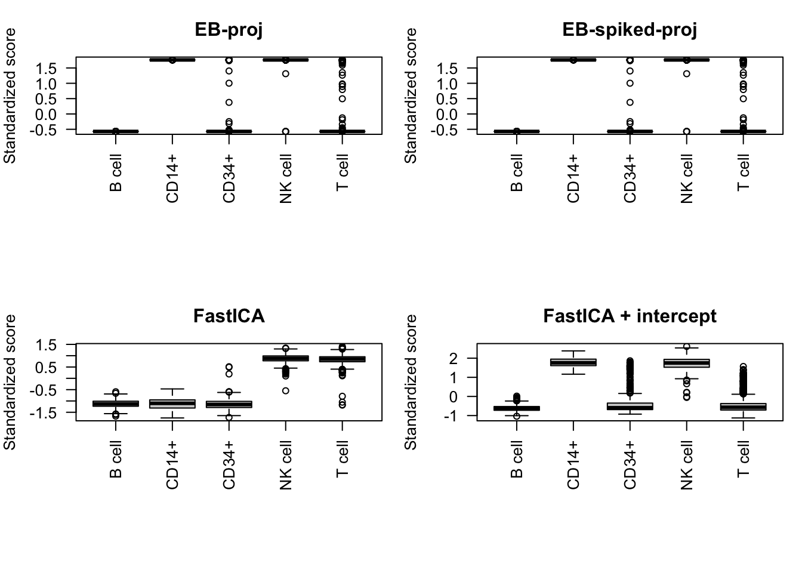
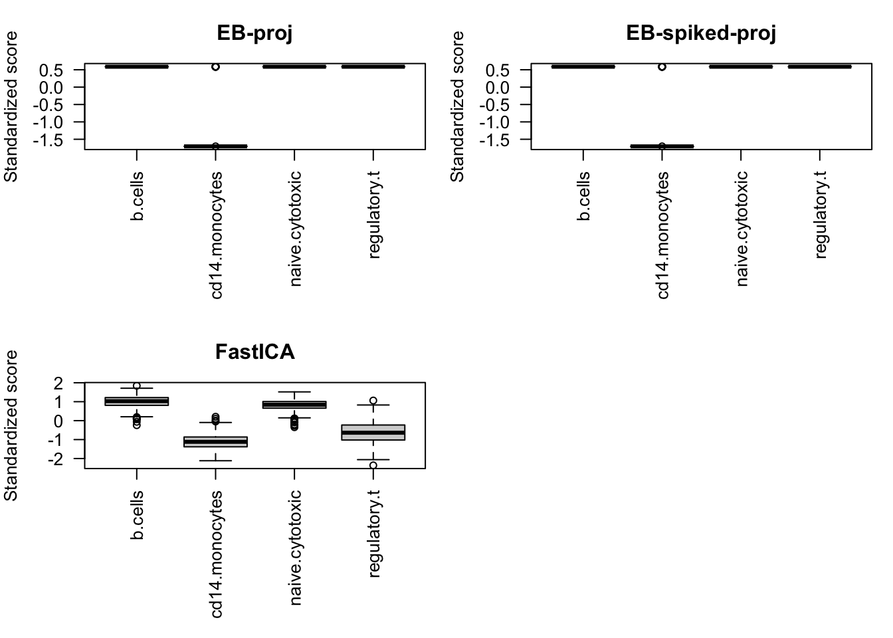
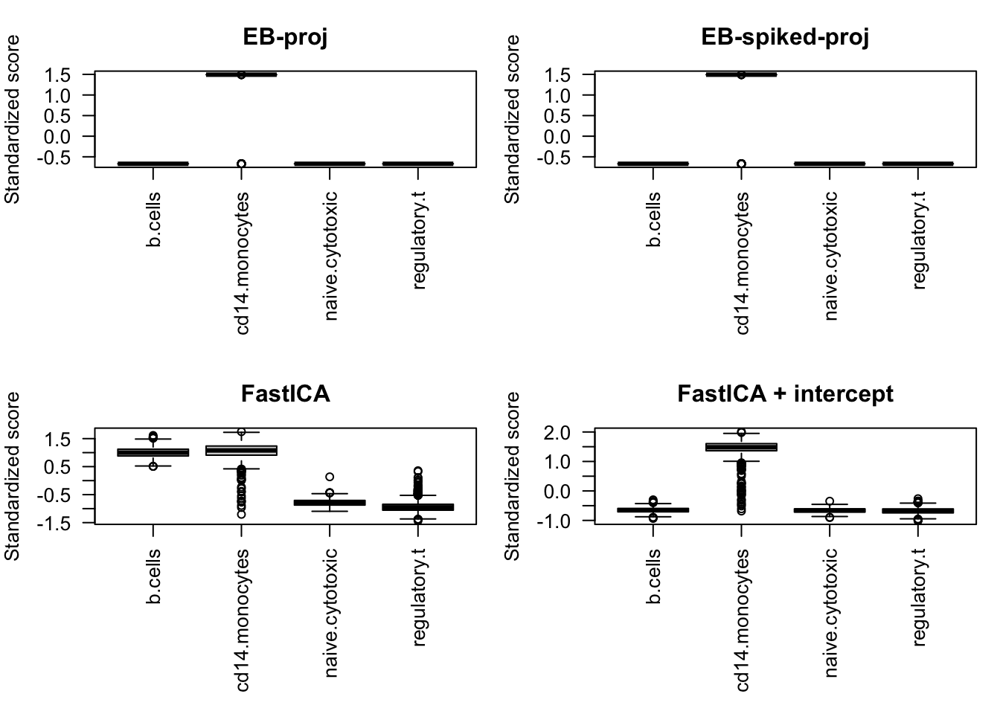

Last updated: 2026-07-28
Checks: 7 0
Knit directory: misc/
This reproducible R Markdown analysis was created with workflowr (version 1.7.2). The Checks tab describes the reproducibility checks that were applied when the results were created. The Past versions tab lists the development history.
Great! Since the R Markdown file has been committed to the Git repository, you know the exact version of the code that produced these results.
Great job! The global environment was empty. Objects defined in the global environment can affect the analysis in your R Markdown file in unknown ways. For reproduciblity it’s best to always run the code in an empty environment.
The command set.seed(20251108) was run prior to running
the code in the R Markdown file. Setting a seed ensures that any results
that rely on randomness, e.g. subsampling or permutations, are
reproducible.
Great job! Recording the operating system, R version, and package versions is critical for reproducibility.
Nice! There were no cached chunks for this analysis, so you can be confident that you successfully produced the results during this run.
Great job! Using relative paths to the files within your workflowr project makes it easier to run your code on other machines.
Great! You are using Git for version control. Tracking code development and connecting the code version to the results is critical for reproducibility.
The results in this page were generated with repository version 3bffbb9. See the Past versions tab to see a history of the changes made to the R Markdown and HTML files.
Note that you need to be careful to ensure that all relevant files for
the analysis have been committed to Git prior to generating the results
(you can use wflow_publish or
wflow_git_commit). workflowr only checks the R Markdown
file, but you know if there are other scripts or data files that it
depends on. Below is the status of the Git repository when the results
were generated:
Ignored files:
Ignored: .DS_Store
Ignored: .Rhistory
Ignored: .Rproj.user/
Ignored: .luarc.json
Ignored: _extensions/
Ignored: analysis/.DS_Store
Ignored: analysis/presentation.html
Untracked files:
Untracked: Rplots.pdf
Untracked: analysis/custom.css
Untracked: analysis/draft.Rmd
Untracked: analysis/eb_ica_backup.Rmd
Untracked: analysis/ebica_math.md
Untracked: analysis/ebproj_on_null.Rmd
Untracked: analysis/ebproj_on_random_proj.Rmd
Untracked: analysis/ebproj_rank_sensitivity.Rmd
Untracked: analysis/ebproj_single_cell_experiment.Rmd
Untracked: analysis/ebproj_zhengmix4eq.Rmd
Untracked: analysis/flashier_whitened_and_tree_example_tese.Rmd
Untracked: analysis/generalized_rademacher.Rmd
Untracked: analysis/ica_vs_flash_r1_rad copy.Rmd
Untracked: analysis/ica_vs_flash_r1_rad.Rmd
Untracked: analysis/ica_vs_flash_r1_update_2.Rmd
Untracked: analysis/index_bacup.Rmd
Untracked: analysis/math-env-refs.html
Untracked: analysis/note.md
Untracked: analysis/notes.Rmd
Untracked: analysis/preemble.tex
Untracked: analysis/presentation.qmd
Untracked: analysis/references.bib
Untracked: analysis/tree_example.Rmd
Untracked: code/ebproj_functions.R
Untracked: code/references.bib
Unstaged changes:
Modified: .gitignore
Modified: analysis/_site.yml
Modified: analysis/eb_ica.Rmd
Modified: analysis/ebproj.Rmd
Modified: analysis/flashier_whitened_and_tree_example.Rmd
Modified: analysis/ica_vs_flash_r1_update_1.Rmd
Modified: analysis/ica_vs_flashier_r1_rad.Rmd
Modified: analysis/ica_with_noise.Rmd
Modified: analysis/on_flashier_and_whitened_data.Rmd
Modified: analysis/on_generalized_rademacher.Rmd
Modified: analysis/shifted_rademacher_for_ebproj.Rmd
Modified: code/ica_functions.R
Modified: code/utils.R
Note that any generated files, e.g. HTML, png, CSS, etc., are not included in this status report because it is ok for generated content to have uncommitted changes.
These are the previous versions of the repository in which changes were
made to the R Markdown (analysis/ebproj_real_data.Rmd) and
HTML (docs/ebproj_real_data.html) files. If you’ve
configured a remote Git repository (see ?wflow_git_remote),
click on the hyperlinks in the table below to view the files as they
were in that past version.
| File | Version | Author | Date | Message |
|---|---|---|---|---|
| Rmd | 3bffbb9 | junmingguan | 2026-07-28 | wflow_publish("analysis/ebproj_real_data.Rmd") |
library(Matrix)
library(fastTopics)
library(DuoClustering2018)
library(irlba)
source(file.path("code", "ebnm_rademacher.R"))
source(file.path("code", "ebnm_shifted_rademacher.R"))
source(file.path("code", "ebproj_functions.R"))
source(file.path("code", "ica_functions.R"))
set.seed(3)This follows the preprocessing in the flashier single-cell vignette.
data("pbmc_facs")
counts <- pbmc_facs$counts
colnames(counts) <- make.names(pbmc_facs$genes$symbol, unique = TRUE)
a <- 1
size_factors <- rowSums(counts)
size_factors <- size_factors / mean(size_factors)
shifted_log_counts <- log1p(counts / (a * size_factors))
dim(shifted_log_counts)[1] 3774 16791Center the shifted-log data, use the leading eight left singular vectors, and form the cell-space projection matrix \(P=UU^\top\).
K <- 8
gene_means <- colMeans(shifted_log_counts)
svd_fit <- irlba(
shifted_log_counts,
nv = K,
nu = K,
center = gene_means
)
U <- svd_fit$u
P <- tcrossprod(U)Initialize from the sign of the first centered singular vector and run one rank-one EB-proj update with the symmetric Rademacher prior.
v_init <- sign(U[, 1])
v_init[v_init == 0] <- 1
fit_ebproj <- eb_proj_rank1_update(
P = P,
v_init = v_init,
ebnm_fn = ebnm_generalized_shifted_rademacher,
k = K,
b = 1,
maxiter = 100
)
c(rho = fit_ebproj$rho, niter = fit_ebproj$niter) rho niter
0.9188129 15.0000000 fit_ebproj$fitted_g pi c
1 0.2445604 0.510888Use the same initialization and Rademacher prior, with \(\kappa=1\).
fit_ebspikedproj <- eb_spiked_proj_rank1_update(
P = P,
v_init = v_init,
ebnm_fn = ebnm_generalized_shifted_rademacher,
k = K,
kappa = 1,
maxiter = 100
)
c(
rho = fit_ebspikedproj$rho,
niter = fit_ebspikedproj$niter,
eta = fit_ebspikedproj$eta,
kappa = fit_ebspikedproj$kappa
) rho niter eta kappa
0.9188120 15.0000000 0.9996416 1.0000000 The whitened cell matrix is \(X_1=\sqrt{n}U^\top\). Use the same initial cell direction as EB-proj.
n <- nrow(U)
X1 <- sqrt(n) * t(U)
w_init <- as.vector(X1 %*% v_init)
w_init <- w_init / sqrt(sum(w_init^2))
w_fastica <- fastica_rank_one_update(
X1 = X1,
init_w = w_init,
n_iter = 100
)
score_fastica <- as.vector(t(X1) %*% w_fastica)Add an all-ones row to the whitened data and estimate its coefficient jointly with the FastICA direction.
X1_intercept <- rbind(intercept = rep(1, ncol(X1)), X1)
w_init_intercept <- c(0, w_init)
w_fastica_intercept <- fastica_rank_one_update(
X1 = X1_intercept,
init_w = w_init_intercept,
n_iter = 100
)
score_fastica_intercept <- as.vector(
t(X1_intercept) %*% w_fastica_intercept
)
c(intercept_weight = w_fastica_intercept[1])intercept_weight
-0.5359315 Signs and scales are arbitrary. Align the other scores to EB-proj and standardize all four before comparing them.
orient_and_scale <- function(x, reference) {
if (cor(x, reference) < 0) {
x <- -x
}
as.vector(scale(x))
}
scores <- list(
"EB-proj" = as.vector(scale(fit_ebproj$vbar)),
"EB-spiked-proj" = orient_and_scale(
fit_ebspikedproj$vbar,
fit_ebproj$vbar
),
"FastICA" = orient_and_scale(score_fastica, fit_ebproj$vbar),
"FastICA + intercept" = orient_and_scale(
score_fastica_intercept,
fit_ebproj$vbar
)
)
subpop <- pbmc_facs$samples$subpop
round(sapply(scores, function(x) tapply(x, subpop, mean)), 2) EB-proj EB-spiked-proj FastICA FastICA + intercept
B cell -0.57 -0.57 -1.13 -0.62
CD14+ 1.76 1.76 -1.12 1.76
CD34+ -0.42 -0.42 -1.14 -0.40
NK cell 1.75 1.75 0.87 1.73
T cell -0.50 -0.50 0.84 -0.47round(cor(do.call(cbind, scores)), 2) EB-proj EB-spiked-proj FastICA FastICA + intercept
EB-proj 1.00 1.00 0.24 0.96
EB-spiked-proj 1.00 1.00 0.24 0.96
FastICA 0.24 0.24 1.00 0.26
FastICA + intercept 0.96 0.96 0.26 1.00old_par <- par(mfrow = c(2, 2), mar = c(8, 4, 3, 1))
for (method in names(scores)) {
boxplot(
scores[[method]] ~ subpop,
main = method,
xlab = "",
ylab = "Standardized score",
las = 2
)
}
par(old_par)At \(\kappa=1\), EB-spiked-proj has \(\eta=0.9997\) and recovers essentially the same direction as EB-proj (score correlation 1.00). Both place CD14+ and NK cells on one side, B and CD34+ cells on the other, and T cells near the center. Their score correlations are 0.56 with ordinary FastICA and 0.70 with FastICA plus an intercept.
Zhengmix4eq contains four pre-sorted immune-cell
populations mixed in approximately equal proportions. Use the version
retaining the top 10% of highly variable genes; all cells and their
pre-sorting labels are retained.
sce <- sce_filteredHVG10_Zhengmix4eq()see ?DuoClustering2018 and browseVignettes('DuoClustering2018') for documentationloading from cacherequire("SingleCellExperiment")Warning: package 'SingleCellExperiment' was built under R version 4.3.2Warning: package 'SummarizedExperiment' was built under R version 4.3.2Warning: package 'matrixStats' was built under R version 4.3.3Warning: package 'S4Vectors' was built under R version 4.3.2Warning: package 'GenomeInfoDb' was built under R version 4.3.3counts <- t(SummarizedExperiment::assay(sce, "counts"))
cell_type <- factor(sce$phenoid)
dim(counts)[1] 3300 1557table(cell_type)cell_type
b.cells cd14.monocytes naive.cytotoxic regulatory.t
822 859 789 830 size_factors <- rowSums(counts)
size_factors <- size_factors / mean(size_factors)
shifted_log_counts <- log1p(counts / size_factors)Center genes, retain the first eight left singular vectors, and construct the cell-space projection \(P=UU^\top\).
K <- 8
svd_fit <- irlba(
shifted_log_counts,
nv = K,
nu = K,
center = colMeans(shifted_log_counts)
)
U <- svd_fit$u
P <- tcrossprod(U)Initialize from the sign of the first centered singular vector and use the generalized shifted Rademacher prior.
v_init <- sign(U[, 1])
v_init[v_init == 0] <- 1
fit_ebproj <- eb_proj_rank1_update(
P = P,
v_init = v_init,
ebnm_fn = ebnm_generalized_shifted_rademacher,
k = K,
b = 1,
maxiter = 100
)
c(rho = fit_ebproj$rho, niter = fit_ebproj$niter) rho niter
0.9787593 4.0000000 fit_ebproj$fitted_g pi c
1 0.7439394 -0.4878788Use the same initialization and prior, with \(\kappa=1\).
fit_ebspikedproj <- eb_spiked_proj_rank1_update(
P = P,
v_init = v_init,
ebnm_fn = ebnm_generalized_shifted_rademacher,
k = K,
kappa = 1,
maxiter = 100
)
c(
rho = fit_ebspikedproj$rho,
niter = fit_ebspikedproj$niter,
eta = fit_ebspikedproj$eta,
kappa = fit_ebspikedproj$kappa
) rho niter eta kappa
0.9787593 4.0000000 0.9996025 1.0000000 fit_ebspikedproj$fitted_g pi c
1 0.7439394 -0.4878788Use the whitened cell matrix \(X_1=\sqrt{n}U^\top\) and the same initial direction.
n <- nrow(U)
X1 <- sqrt(n) * t(U)
w_init <- as.vector(X1 %*% v_init)
w_init <- w_init / sqrt(sum(w_init^2))
w_fastica <- fastica_rank_one_update(
X1 = X1,
init_w = w_init,
n_iter = 100
)
score_fastica <- as.vector(t(X1) %*% w_fastica)X1_intercept <- rbind(intercept = rep(1, ncol(X1)), X1)
w_init_intercept <- c(0, w_init)
w_fastica_intercept <- fastica_rank_one_update(
X1 = X1_intercept,
init_w = w_init_intercept,
n_iter = 100
)
score_fastica_intercept <- as.vector(
t(X1_intercept) %*% w_fastica_intercept
)
intercept_diagnostics <- c(
intercept_weight = w_fastica_intercept[1],
direction_norm = sqrt(sum(w_fastica_intercept[-1]^2)),
raw_score_sd = sd(score_fastica_intercept)
)
intercept_diagnosticsintercept_weight direction_norm raw_score_sd
1.000000e+00 3.109304e-14 3.110142e-14 intercept_degenerate <- intercept_diagnostics["direction_norm"] < 1e-8Signs and scales are arbitrary. Align the other scores to EB-proj and
standardize all nondegenerate methods. label_R2 is the
fraction of each score’s variance explained by the four known cell
labels.
scores <- list(
"EB-proj" = as.vector(scale(fit_ebproj$vbar)),
"EB-spiked-proj" = orient_and_scale(
fit_ebspikedproj$vbar,
fit_ebproj$vbar
),
"FastICA" = orient_and_scale(score_fastica, fit_ebproj$vbar)
)
if (!intercept_degenerate) {
scores[["FastICA + intercept"]] <- orient_and_scale(
score_fastica_intercept,
fit_ebproj$vbar
)
}
round(sapply(scores, function(x) tapply(x, cell_type, mean)), 2) EB-proj EB-spiked-proj FastICA
b.cells 0.59 0.59 1.01
cd14.monocytes -1.67 -1.67 -1.13
naive.cytotoxic 0.59 0.59 0.83
regulatory.t 0.59 0.59 -0.62round(cor(do.call(cbind, scores)), 2) EB-proj EB-spiked-proj FastICA
EB-proj 1.00 1.00 0.67
EB-spiked-proj 1.00 1.00 0.67
FastICA 0.67 0.67 1.00label_R2 <- sapply(
scores,
function(x) summary(lm(x ~ cell_type))$r.squared
)
round(label_R2, 3) EB-proj EB-spiked-proj FastICA
0.978 0.978 0.845 old_par <- par(mfrow = c(2, 2), mar = c(8, 4, 3, 1))
for (method in names(scores)) {
boxplot(
scores[[method]] ~ cell_type,
main = method,
xlab = "",
ylab = "Standardized score",
las = 2
)
}
par(old_par)
Because four labels span a three-dimensional contrast space, a single
rank-one component can recover only one split among the populations.
Thus, label_R2 measures association with the known labels,
not complete recovery of the four-class structure. The intercept FastICA
fit is excluded from these comparisons if it converges to an
intercept-only, constant-score solution.
With the generalized shifted Rademacher prior, both EB methods isolate CD14 monocytes from the other three populations and produce identical scores. Their label \(R^2\) is 0.978, compared with 0.845 for FastICA, and the EB–FastICA score correlation is 0.67. FastICA with an intercept converges to an intercept-only solution and therefore has no usable cell score.
Zhengmix4uneq contains the same four pre-sorted
immune-cell populations in deliberately unequal proportions. Use the
version retaining the top 10% of highly variable genes; all retained
cells and their pre-sorting labels are included.
sce <- sce_filteredHVG10_Zhengmix4uneq()see ?DuoClustering2018 and browseVignettes('DuoClustering2018') for documentationloading from cachecounts <- t(SummarizedExperiment::assay(sce, "counts"))
cell_type <- factor(sce$phenoid)
dim(counts)[1] 5079 1644table(cell_type)cell_type
b.cells cd14.monocytes naive.cytotoxic regulatory.t
783 1600 364 2332 size_factors <- rowSums(counts)
size_factors <- size_factors / mean(size_factors)
shifted_log_counts <- log1p(counts / size_factors)Center genes, retain the first eight left singular vectors, and construct the cell-space projection \(P=UU^\top\).
K <- 8
svd_fit <- irlba(
shifted_log_counts,
nv = K,
nu = K,
center = colMeans(shifted_log_counts)
)
U <- svd_fit$u
P <- tcrossprod(U)Initialize from the sign of the first centered singular vector and use the generalized shifted Rademacher prior.
v_init <- sign(U[, 1])
v_init[v_init == 0] <- 1
fit_ebproj <- eb_proj_rank1_update(
P = P,
v_init = v_init,
ebnm_fn = ebnm_generalized_shifted_rademacher,
k = K,
b = 1,
maxiter = 100
)
c(rho = fit_ebproj$rho, niter = fit_ebproj$niter) rho niter
0.9796743 4.0000000 fit_ebproj$fitted_g pi c
1 0.3097183 0.3805864Use the same initialization and prior, with \(\kappa=1\).
fit_ebspikedproj <- eb_spiked_proj_rank1_update(
P = P,
v_init = v_init,
ebnm_fn = ebnm_generalized_shifted_rademacher,
k = K,
kappa = 1,
maxiter = 100
)
c(
rho = fit_ebspikedproj$rho,
niter = fit_ebspikedproj$niter,
eta = fit_ebspikedproj$eta,
kappa = fit_ebspikedproj$kappa
) rho niter eta kappa
0.9796743 4.0000000 0.9997698 1.0000000 fit_ebspikedproj$fitted_g pi c
1 0.309718 0.3805864Use the whitened cell matrix \(X_1=\sqrt{n}U^\top\) and the same initial direction.
n <- nrow(U)
X1 <- sqrt(n) * t(U)
w_init <- as.vector(X1 %*% v_init)
w_init <- w_init / sqrt(sum(w_init^2))
w_fastica <- fastica_rank_one_update(
X1 = X1,
init_w = w_init,
n_iter = 100
)
score_fastica <- as.vector(t(X1) %*% w_fastica)X1_intercept <- rbind(intercept = rep(1, ncol(X1)), X1)
w_init_intercept <- c(0, w_init)
w_fastica_intercept <- fastica_rank_one_update(
X1 = X1_intercept,
init_w = w_init_intercept,
n_iter = 100
)
score_fastica_intercept <- as.vector(
t(X1_intercept) %*% w_fastica_intercept
)
intercept_diagnostics <- c(
intercept_weight = w_fastica_intercept[1],
direction_norm = sqrt(sum(w_fastica_intercept[-1]^2)),
raw_score_sd = sd(score_fastica_intercept)
)
intercept_diagnosticsintercept_weight direction_norm raw_score_sd
-0.3919312 0.9199945 0.9200851 intercept_degenerate <- intercept_diagnostics["direction_norm"] < 1e-8Signs and scales are arbitrary. Align the other scores to EB-proj and
standardize all nondegenerate methods. label_R2 is the
fraction of each score’s variance explained by the four known cell
labels.
scores <- list(
"EB-proj" = as.vector(scale(fit_ebproj$vbar)),
"EB-spiked-proj" = orient_and_scale(
fit_ebspikedproj$vbar,
fit_ebproj$vbar
),
"FastICA" = orient_and_scale(score_fastica, fit_ebproj$vbar)
)
if (!intercept_degenerate) {
scores[["FastICA + intercept"]] <- orient_and_scale(
score_fastica_intercept,
fit_ebproj$vbar
)
}
round(sapply(scores, function(x) tapply(x, cell_type, mean)), 2) EB-proj EB-spiked-proj FastICA FastICA + intercept
b.cells -0.67 -0.67 1.00 -0.65
cd14.monocytes 1.46 1.46 1.05 1.45
naive.cytotoxic -0.67 -0.67 -0.78 -0.66
regulatory.t -0.67 -0.67 -0.94 -0.67round(cor(do.call(cbind, scores)), 2) EB-proj EB-spiked-proj FastICA FastICA + intercept
EB-proj 1.00 1.00 0.72 0.99
EB-spiked-proj 1.00 1.00 0.72 0.99
FastICA 0.72 0.72 1.00 0.73
FastICA + intercept 0.99 0.99 0.73 1.00label_R2 <- sapply(
scores,
function(x) summary(lm(x ~ cell_type))$r.squared
)
round(label_R2, 3) EB-proj EB-spiked-proj FastICA FastICA + intercept
0.976 0.976 0.950 0.969 old_par <- par(mfrow = c(2, 2), mar = c(8, 4, 3, 1))
for (method in names(scores)) {
boxplot(
scores[[method]] ~ cell_type,
main = method,
xlab = "",
ylab = "Standardized score",
las = 2
)
}
par(old_par)As in the equal-mixture experiment, a single rank-one component can recover only one split among the four known populations. The unequal mixture tests whether the learned mixture weight and shift adapt to class imbalance.
The filtered dataset contains 5,079 cells, including 1,600 CD14 monocytes. Both EB methods isolate CD14 monocytes from the other three populations and produce identical scores, with \(\rho=0.980\) and label \(R^2=0.976\). The fitted prior weight is \(\pi=0.310\), close to the observed CD14 proportion \(1600/5079=0.315\). Ordinary FastICA finds a somewhat different contrast (\(R^2=0.950\), correlation 0.72 with EB), whereas FastICA with an intercept closely matches EB (\(R^2=0.969\), correlation 0.99) and does not degenerate.
sessionInfo()R version 4.3.1 (2023-06-16)
Platform: aarch64-apple-darwin20 (64-bit)
Running under: macOS 26.5.2
Matrix products: default
BLAS: /Library/Frameworks/R.framework/Versions/4.3-arm64/Resources/lib/libRblas.0.dylib
LAPACK: /Library/Frameworks/R.framework/Versions/4.3-arm64/Resources/lib/libRlapack.dylib; LAPACK version 3.11.0
locale:
[1] en_US.UTF-8/en_US.UTF-8/en_US.UTF-8/C/en_US.UTF-8/en_US.UTF-8
time zone: America/Chicago
tzcode source: internal
attached base packages:
[1] stats4 stats graphics grDevices utils datasets methods
[8] base
other attached packages:
[1] SingleCellExperiment_1.24.0 SummarizedExperiment_1.32.0
[3] Biobase_2.62.0 GenomicRanges_1.54.1
[5] GenomeInfoDb_1.38.8 IRanges_2.36.0
[7] S4Vectors_0.40.2 BiocGenerics_0.48.1
[9] MatrixGenerics_1.14.0 matrixStats_1.5.0
[11] irlba_2.3.7 DuoClustering2018_1.20.0
[13] fastTopics_0.7-44 Matrix_1.6-4
[15] workflowr_1.7.2
loaded via a namespace (and not attached):
[1] RColorBrewer_1.1-3 rstudioapi_0.18.0
[3] jsonlite_2.0.0 magrittr_2.0.5
[5] farver_2.1.2 rmarkdown_2.31
[7] fs_1.6.6 zlibbioc_1.48.2
[9] vctrs_0.6.5 memoise_2.0.1
[11] RCurl_1.98-1.18 SQUAREM_2026.1
[13] mixsqp_0.3-54 htmltools_0.5.9
[15] S4Arrays_1.2.1 progress_1.2.3
[17] AnnotationHub_3.10.1 curl_6.4.0
[19] truncnorm_1.0-9 SparseArray_1.2.4
[21] sass_0.4.10 bslib_0.10.0
[23] htmlwidgets_1.6.4 plyr_1.8.9
[25] plotly_4.12.0 cachem_1.1.0
[27] whisker_0.4.1 mime_0.13
[29] lifecycle_1.0.5 pkgconfig_2.0.3
[31] R6_2.6.1 fastmap_1.2.0
[33] GenomeInfoDbData_1.2.11 shiny_1.13.0
[35] digest_0.6.37 AnnotationDbi_1.64.1
[37] rprojroot_2.1.1 ExperimentHub_2.10.0
[39] RSQLite_3.53.3 invgamma_1.2
[41] filelock_1.0.3 httr_1.4.8
[43] abind_1.4-8 compiler_4.3.1
[45] bit64_4.6.0-1 withr_3.0.2
[47] viridis_0.6.5 DBI_1.3.0
[49] DelayedArray_0.28.0 rappdirs_0.3.4
[51] gtools_3.9.5 tools_4.3.1
[53] otel_0.2.0 interactiveDisplayBase_1.40.0
[55] httpuv_1.6.17 glue_1.8.0
[57] quadprog_1.5-8 callr_3.7.6
[59] promises_1.5.0 grid_4.3.1
[61] Rtsne_0.17 getPass_0.2-4
[63] reshape2_1.4.5 generics_0.1.4
[65] gtable_0.3.6 tidyr_1.3.2
[67] data.table_1.17.8 hms_1.1.4
[69] XVector_0.42.0 ggrepel_0.9.6
[71] BiocVersion_3.18.1 pillar_1.11.1
[73] stringr_1.6.0 later_1.4.8
[75] dplyr_1.1.4 BiocFileCache_2.10.2
[77] lattice_0.22-9 bit_4.6.0
[79] tidyselect_1.2.1 Biostrings_2.70.3
[81] pbapply_1.7-4 knitr_1.51
[83] git2r_0.36.2 gridExtra_2.3
[85] RhpcBLASctl_0.23-42 xfun_0.57
[87] stringi_1.8.7 lazyeval_0.2.3
[89] yaml_2.3.12 evaluate_1.0.5
[91] tibble_3.3.1 BiocManager_1.30.26
[93] cli_3.6.5 uwot_0.2.4
[95] RcppParallel_5.1.11-2 xtable_1.8-8
[97] processx_3.8.7 jquerylib_0.1.4
[99] Rcpp_1.1.0 dbplyr_2.5.2
[101] png_0.1-9 parallel_4.3.1
[103] ggplot2_3.5.2 blob_1.2.4
[105] prettyunits_1.2.0 mclust_6.1.2
[107] bitops_1.0-9 viridisLite_0.4.3
[109] ggthemes_5.2.0 scales_1.4.0
[111] purrr_1.0.4 crayon_1.5.3
[113] rlang_1.1.6 cowplot_1.2.0
[115] ashr_2.2-63 KEGGREST_1.42.0